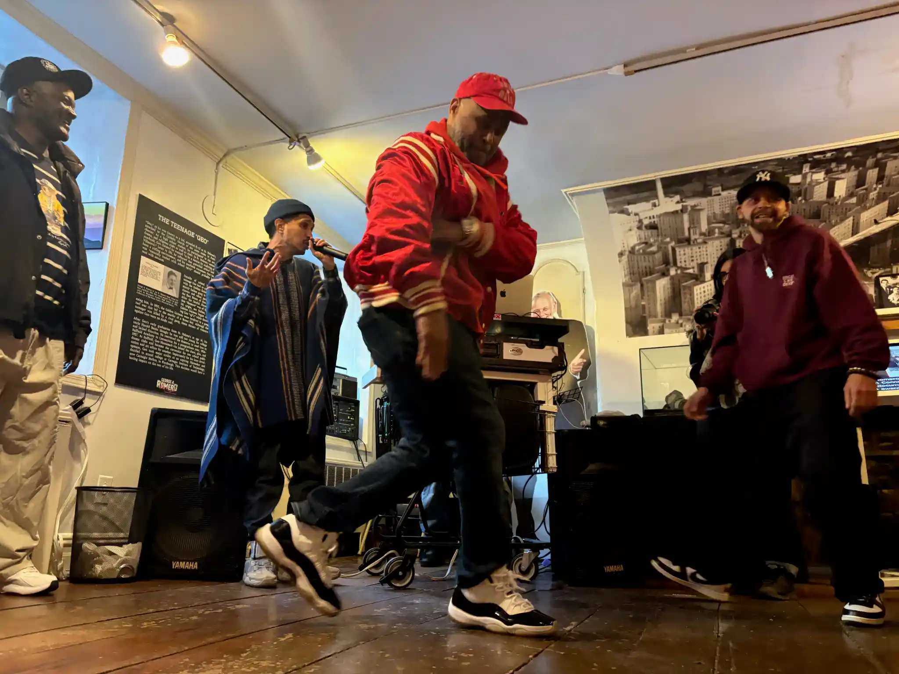
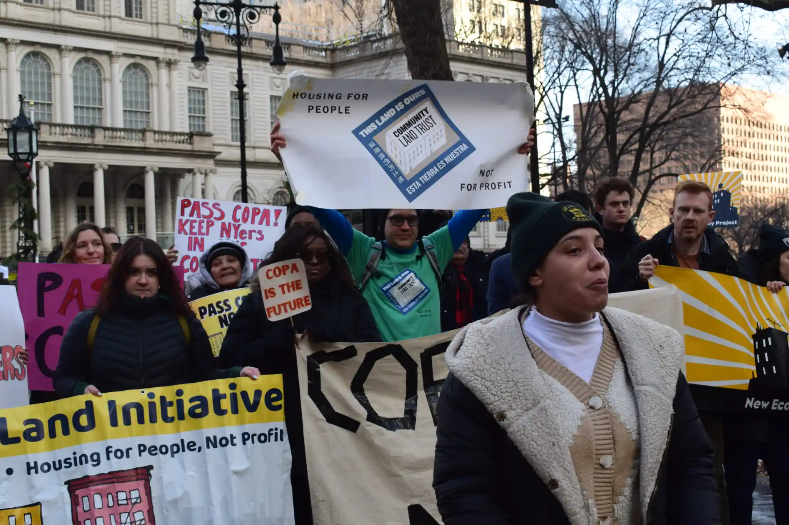

Hi! My name is Siddhartha Harmalkar. I'm a student at CUNY's Craig Newmark School of Journalism. I worked in tech for 4 years after graduating from the University of Maryland, and I've been freelancing for local outlets in NYC for the past year. I'm interested in international politics, data journalism, and video features.
Here are some stories I've published:

During the opening night of the Bronx County Historical Society’s “When The Bronx Moved” exhibition in February, every room of the colonial-era building was packed with dancers who grew up learning from the legends celebrated on its walls. “All of these people are my family,” Edgardo Encarnacion “Kamakaze” said, spreading his arms to encompass the crowd gathered and pointing out people who helped him break into the South Bronx dance scene in his early 20s. Kamakaze was part of the third generation of the New York City Breakers, and got his name after jumping in to battle anyone regardless of their status in the dance community. “When you’re around family, you know who they are,” he said. “Even though you haven’t seen them for like 20 or 30 years, you still have a historic connection with that person.” Kamakaze started dancing after losing his brother as a teenager. “That’s what kept me alive, the dancing.” The Bronx County Historical Society, a non-profit educational and cultural institution chartered by the New York State Board of Regents, was founded in 1955. The group is dedicated to the preservation of the history of the Bronx and lower Westchester County, from its habitation by Indigenous communities through the present. “These exhibits are extremely important because they are a portal into the most significant cultural renaissance of the last 50 years,” said Jorge “Popmaster Fabel” Pabon, who led a guided tour of the exhibit.
Read more here
Bronx-based affordable housing groups won a City Council vote yesterday on the Community Opportunity to Purchase Act (COPA), a bill that gives nonprofits new leverage to buy distressed apartment buildings and keep them affordable. Introduced by Council Member Sandy Nurse –who represents majority-Hispanic neighborhoods along Brooklyn’s northern border– the bill gives city certified housing preservation groups first dibs on some apartment buildings when they go up for sale. Landlord and real estate groups objected to the bill, saying it would expand government involvement in private property sales, while supporters say it will increase the supply of permanently affordable housing managed by tenants or nonprofits. If signed into law by Mayor Adams by the end of the year, it will come into effect in 2027. “Today’s passage of the Community Opportunity to Purchase Act is a transformative victory for housing justice — won through years of organizing by community land trusts, tenants, and groups across the five boroughs,” said Deyanira Del Rio, executive director of New Economy Project in a statement.
Read more hereHere are some of my favorite stories: